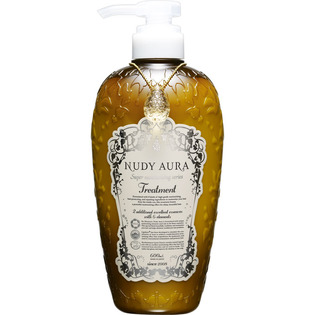

返回列表
产品名称：サンテック産業 ヌーディオーラ トリートメント

ジャパンゲートウェイ サンテック産業 ヌーディオーラ トリートメント ６００ｍｌ
メーカー ジャパンゲートウェイ
JANコード 4562200532027
商品の特徴
8種類の高級保湿成分が髪1本1本、すみずみまで浸透。優しく洗浄された髪にたっぷり水分補給をし、輝きのある潤髪へと導くトリートメントです。
成分・分量
用法及び用量